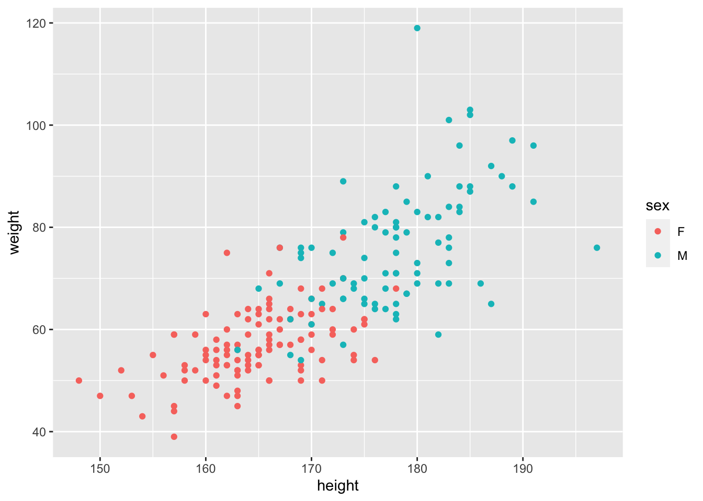
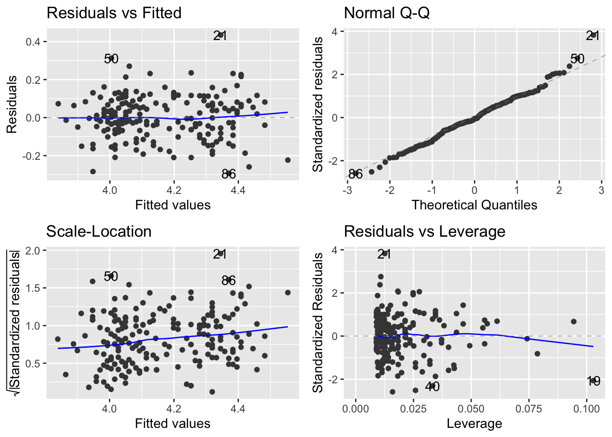

Chapter 6 Interactions Part 2: Introducing the ANCOVA (analysis of covariance)
In the previous chapters, we introduced classic experimental design principles, and in doing so, we focused on revisiting the 1-way ANOVA and introduced the 2-way ANOVA. In these models, the explanatory variables are categorical (they are factors). This means explanatory variable has distinct, discrete categories or levels.
In many of our experiments, however, we might combine a categorical variable with a continuous variable. For example, we might estimate eggs produced as a function of body size (continuous) and season (categorical). Or we might estimate the effect of a mutagen (continuous) on tumour formation in wild type vs. genetically modified (categorical) fruit flies.
These simple examples describe an ANCOVA, where the one explanatory variable is continuous (e.g. body size or mutagen) and the other is categorical (e.g. season or fly-type). When this is the case, we are essentially combining the ANOVA with the Regression model! If we recall that regression is largely about estimating slopes and intercepts, we might think, hey, COOL, so in an ANCOVA, we can ask if the categorical variable alters the slope or not….. and that’d be correct.
What is very important to understand is that our core statement about interactions does not change.
The effect of X on Y varies by Z, translates to a) The effect of body size on egg production varies by season; or b) the effect of mutagen on tumour formation varies by fly-type.
When written like this, the previous statements about slopes should be even more clear. The effect of body size (continuous) on egg production is a regression and we estimate a slope. The effect of the mutagen concentration on tumour formation is a regression and we estimate a slope. We then can ask whether this slope is different between seasons or fly-type.
6.1 What this chapter covers.
This chapter will focus on the ANCOVA, but it also touches on additional concepts. The primary foci are thus:
- The ANCOVA model
- transformations
- plotting model results when you’ve made transformations.
6.2 Setting up the various ideas.
Let’s start by looking at an example where the effect of Height on Weight varies by Sex. This is a classic set of data from numerous organisms…. it captures biologically the question about sexual dimorphism - does the relationship between Height and Weight (a regression with the continuous variable Weight) vary by Sex (the categorical variable [e.g. ANOVA], in this case M/F but it can be more depending on organism)?
This relationship can take on many patterns.

- In the upper left we see a pattern where Males are heavier than Females, but there is no effect of Height on Weight.
- In the upper right, we see that there is a positive relationship between Weight and Height, but no differences between Males and Females.
- In the lower left, we might argue that there is a positive relationship between Weight and Height, that the relationship between Weight and Height does not vary (the slope is the same) and that Males are heavier (the red dots are mostly above the blue)
- In the lower right, we see evidence of an interaction - the effect of Height on Weight (the slopes), varies by Sex.
It’s quite important to recognise that each of these patterns (predictions) is possible outcome to testing the SAME null hypothesis. The key thing to remember is that we have an a priori (in advance hypothesis) that there is no difference between the slopes for males and females. Regardless of the pattern, we should specify the appropriate model to test your the hypothesis and answer the question that motivated the design of the experiment and data collection.
Let’s be super clear: in these data we start with the fundamental question that uses the same vocabulary that we used in the previous chapter - does the effect of Height on Weight vary by Sex. The data might look like any one of the above patterns. BUT, there is only one model syntax in the above figure that tests the null hypothesis and gives us a chance to evaluate the predictions: lm(Weight ~ Height * Sex, data = data.frame.name).
If you need a refresher on what the * symbol means, pop back to chapter 5 where we explain this when we fit the models; we also review this below.
6.2.1 Anticipating the ANOVA table for an ANCOVA model
Let us also recall the sequential nature of the ANOVA table output. This is about what we expect to see, having fit a model, which we will do below. In contrast to the ANOVA, with an ANCOVA, we will see first an estimate of variation explained by the continuous variable, then the categorical variable and finally, after seeing the report on both of those, an estimate of the variation attributable to the interaction. Another way to think of this is as follows (explore the figures above along with this):
- What is the estimate of the intercept and slope, ignoring the different categories, and how much variation does this explain.
- What happens if we let there be two lines, one for each category, but with the same slope (e.g. different intercepts, but same slope). Does this explain more variation?
- Finally, what if we let there be two lines, and different slopes (the interaction exists) - does this explain additional variation?
If we get to the last scenario, and the answer is yes, after all the other options, the different slopes does capture variation in our response, we have evidence of an interaction.
6.3 Working through an ANCOVA example.
Let’s work with a built in dataset in R - the Davis Study, which is exactly these data. The associated assignment provides another example.
The process of doing this will follow a tried and true approach to analysing data. You should have this workflow fully embedded in your head now:
- PLOT the Data
- Build the model to test the hypothesis
- Check the Assumptions
- Make Inference
- Update the Figure for Publication
6.3.1 Organise the packages and get the data and make your picture
The data we are using is an example dataset built into R, but embedded in the carData package, which is installed with the car package - download and install this and they you can use the following code (don’t forget the tidyverse, agricolae, ggfortify, visreg etc).
These data ARE NOT on the blackboard site.
Note also that if you are building your own script, you need the following packages: tidyverse, ggfortify, visreg, patchwork
library(tidyverse)
library(ggfortify)
library(visreg)
library(patchwork)
# this creates a working version of the davis data for you.
# the carData:: syntax is a way to use this package without using
# the library() function.
Davis <- carData::Davis
# check it out
glimpse(Davis)## Rows: 200
## Columns: 5
## $ sex <fct> M, F, F, M, F, M, M, M, M, M, M, F, F, F, F, F, M, F, M, F, M, …
## $ weight <int> 77, 58, 53, 68, 59, 76, 76, 69, 71, 65, 70, 166, 51, 64, 52, 65…
## $ height <int> 182, 161, 161, 177, 157, 170, 167, 186, 178, 171, 175, 57, 161,…
## $ repwt <int> 77, 51, 54, 70, 59, 76, 77, 73, 71, 64, 75, 56, 52, 64, 57, 66,…
## $ repht <int> 180, 159, 158, 175, 155, 165, 165, 180, 175, 170, 174, 163, 158…# make the most basic of exploratory plots.
ggplot(Davis, aes(x = height, y = weight, col = sex))+
geom_point()
Whoa!… what’s going on here? Well,here is a massive justification of why we say “always plot your data” before you do anything. It looks like one of the data points has the height and weight data entered incorrectly, the wrong way around. This is a ‘feature’ of this dataset. Of course you could go back to your master spreadsheet and make the corretion, which is a good idea in real life, but let’s see how to fix this using R. Let’s fix that. Lets find the row with the mistake by looking for height values <100, and then make the switch.
## sex weight height repwt repht
## 12 F 166 57 56 163## [1] 166## [1] 57# BASE R syntax to change the specific values in the specific row
Davis$weight[12] <- 57
Davis$height[12] <- 166
# replot
ggplot(Davis, aes(x = height, y = weight, col = sex))+
geom_point()
Excellent. Let’s look at this picture and ask ourselves the null hypothesis question: does the effect of Height on Weight vary by Sex? What do you think?
We can actually get a bit of help here. We can use some ggplot magic to help us make this GUESS. Let’s use geom_smooth() to help us guess the answer.
NOTE: this is not doing statistics. This is using graphics to help guide insight and our expectation of the outcome before doing the statistical test of our hypothesis.
ggplot(Davis, aes(x = height, y = weight, col = sex))+
geom_point()+
# add a best fit line to each group (the sex category)
geom_smooth(method = lm, se = FALSE)## `geom_smooth()` using formula = 'y ~ x'
Again, we have not ‘proven’ anything or tested our hypothesis. What we have is a good guess though. We can guess that
- Males are heavier than females (what is the difference in the intercepts?)
- The effect of height on weight is positive (the slope(s) are positive, not negative)
- There might be a difference in slopes - the Male line looks steeper.
We might even go as far to estimate by eye the overall slope, assuming that there is no effect of Sex. Recalling that the slope is the rise over run or the change in y over the change in x, we can guess that the slope is ~ \((100-40)/(200-140) = (60/60) = 1\). Can you guess a slope for each Sex?
6.4 Building the model (and understanding it)
The next step is to build the model to test our hypothesis. As we declared above, the model to test the interaction is lm(weight ~ height * sex, data = Davis). Let’s discuss this a bit.
First, as described above, and in Chapter 5, this model with the * expands to the following full model of two main effects and an interaction:
lm(weight ~ height + sex + height:sex, data = Davis)
This reads as “weight is a function of the effect of height (slope), sex (intercept) and the interaction between height and sex (do the slopes vary?). The height * aex syntax always expands to this full model - the model containing the main effects and the interaction.
OK. Let’s fit the model
That’s it. We’ve got the model. But before we make any attempts at actually evaluating our test of the hypothesis, we have to check the assumptions!
To do this, we use the autoplot function from the ggfortify package.

OK. Let’s walk through the three core diagnostics.
In the upper left, we are evaluating the systematic part of the model - are there any systematic departures from the linear model we’ve speficied? Are there interactions missing or specific non-linearities? Nope.
In the upper right, we are evaluating the normality of the residuals. These too look pretty good. If you notice, event though there are some deviations, but the pattern is that the deviations move away from the line but ‘come back’ at the very ends. This is typical of normally distributed residuals.
In the lower left, we are evaluating the assumption of a constant mean-variance relationship. Oops. Remember, we are expecting something that does not show a trend at all. Even without the panic lines, this looks like the variance (y-axis) is increasing with the mean (x-axis).
6.4.1 Dealing with the mean-variance breakdown.
The above issue is one we can deal with via a transformation.
Let’s start with the facts…. When the variance increases with the mean, a transformation that can work is the logarithm of the continuous variables.
There is a short section in the (APS 240 reading)[https://dzchilds.github.io/stats-for-bio/data-transformations.html#trans-types] to explore. Please do read this summary about transformations, and bookmark it for the future. It is very handy.
A question that routinely comes up is whether transformations are ‘changing the data’. Rather than focusing on this, we offer the following interpretation. Linear models fit by lm() carry a set of assumptions (our focus on the three panels using autoplot). If these are not met, we can not trust our inference (F-testing).
Most biological data are unlikely to conform perfectly to all the assumptions, but experience has shown (fortunately) that t-tests, ANOVAs and regressions (e.g. the latter two being general linear models) are quite robust—they perform reasonably well with data that deviate to some extent from the assumptions of the tests. However, in some cases residuals are clearly very far from normal, or variances change a lot across groups - from (APS 240)[https://dzchilds.github.io/stats-for-bio/data-transformations.html#transforms-introduction].
But if there are real problems, we can use transformations. They do not ‘change the data’ instead, they retain the relationships between the data points, but put everything on a difference scale so that we can use the power of the linear model to answer the question. The tricky thing is how do we report our insights to the reader back on the original ‘response’ scale. We’ll get to that. But rest assured, transformations don’t change the data.
So, here are the data where we transform both continuous variables with a log transformation - the continuous response variable and the continuous explanatory variable. Perhaps check ?log to remind yourself of whether this is a log10 or natural log transformation…..
# re-plot with log-log
ggplot(data = Davis, aes(x = log(height), y = log(weight), col = sex))+
geom_point()+
geom_smooth(method = lm, se = FALSE)## `geom_smooth()` using formula = 'y ~ x'
OK. The patterns are still there. And let’s see what happens with the model and assumptions now!
# fit the model - note we can specify the transformation RIGHT IN THE MODEL
mod_Davis_log <- lm(log(weight) ~ log(height) * sex, data = Davis)
# check the new residuals
autoplot(mod_Davis_log)
The scale-location plot is definitely flatter - you can tell by the range on the y-axis of the scale-location plot. So, with this transformation, we can now move to evaluating the model. You are probably thinking about what it means to analyse the data on the log-log axis…. we will come to that shortly.
6.4.2 Making inference on the ANCOVA
The next step is to use the detail in the ANOVA table - yes, we use the same anova() function to build an anova table to explore the results of an ANCOVA.
Let’s revisit our initial guesses and work through what the model is telling us:
- Males are heavier than females (what is the difference in the intercepts?)
- The effect of height on weight is positive (the slope(s) are positive, not negative)
- There might be a difference in slopes - the Male line is steeper.
Together, the graph and these guesses lead to a feeling that the effect of height on weight varies by sex.
## Analysis of Variance Table
##
## Response: log(weight)
## Df Sum Sq Mean Sq F value Pr(>F)
## log(height) 1 4.6643 4.6643 357.4735 < 2.2e-16 ***
## sex 1 0.3446 0.3446 26.4115 6.647e-07 ***
## log(height):sex 1 0.0144 0.0144 1.1038 0.2947
## Residuals 196 2.5574 0.0130
## ---
## Signif. codes: 0 '***' 0.001 '**' 0.01 '*' 0.05 '.' 0.1 ' ' 1Howwever…. The table tells us that there is no evidence for an interaction. The last line of this table contains the p-value for the interaction. It is testing the null hypothesis that the slopes are the same. We can not reject this null hypothesis. There is no evidence that allowing the slopes for Males and Females be different is supported. That’s the answer to guess 3 above. It is also the answer to our question: does the effect of Height on Weight vary by Sex. Nope.
However, we do detect main effects of height and sex. This means that each of these DOES have an effect - but we say the effects are additive.
Great. What this means is that the data, despite the pattern our eye sees, can not be distinguished from the pattern in the picture in the lower left.
There is a slope associated with Height (we don’t know whether it’s positive or not, but we think it is), and there is an effect of sex (we don’t know whether Males are heavier yet). What we can say, with confidence, is this.
The effect of height on weight did not vary by sex (F = 1.01, df = 1,196, p = 0.29). The effect of sex (F, df, p) and height (F, df, p) are thus additive on Weight.
Let’s work sequentially to read the table now:
When we allow for a common slope associated with log(Height), we capture \(4.66\) units of variation in log(weight), which when compared to the \(0.013\) units of variation left over (residual MSE), is a lot. The F-value is thus BIG and the p-value small. When we allow for an effect of Sex to define different average log(weight), this too is important as it captures \(0.344\) units of variation, which compared to the \(0.013\) units in the residual, is also big (Big F, small P).
However, when we allow for the slopes caused by log(height) to vary with sex, this captures very little additional variation with respect to the residual variation (\(0.014\) comprared to \(0.013\)) hence a small F and a large P for this term.
6.4.3 The summary table, the actual slopes and making sense of the log stuff.
Let’s start investigating the details via the summary table:
##
## Call:
## lm(formula = log(weight) ~ log(height) * sex, data = Davis)
##
## Residuals:
## Min 1Q Median 3Q Max
## -0.29310 -0.06543 -0.00592 0.07420 0.43410
##
## Coefficients:
## Estimate Std. Error t value Pr(>|t|)
## (Intercept) -5.3202 1.6016 -3.322 0.00107 **
## log(height) 1.8329 0.3138 5.841 2.13e-08 ***
## sexM -2.3724 2.3765 -0.998 0.31936
## log(height):sexM 0.4852 0.4618 1.051 0.29473
## ---
## Signif. codes: 0 '***' 0.001 '**' 0.01 '*' 0.05 '.' 0.1 ' ' 1
##
## Residual standard error: 0.1142 on 196 degrees of freedom
## Multiple R-squared: 0.6626, Adjusted R-squared: 0.6575
## F-statistic: 128.3 on 3 and 196 DF, p-value: < 2.2e-16This table reports on the treatment contrasts we introduced earlier this semester. Let’s walk through the details.
The first two rows correspond to one of the sexes. Can you identify which one? The hint is looking at the other rows. They have an M after them. M comes after F (F is first in the alphabet). So the first two rows correspond to the intercept and slope of the Females.
You may be asking why the intercept is a negative number. A simple look back at the range of the x-axis should answer this… the y intercept occurs at x = 0, right?
You should understand, from the principles of an equation for a line, the following:
the effect of height on weight for females is
log(weightF) = -5.32 + 1.82*log(heightF).
OK… let’s interpret what the next two lines mean. The third line is labelled SexM. The fourth is labelled logHeight:SexM. Any guesses as to which is associated with the slope and which the intercept?
One trick, again, is to recognise the syntax -> the presence of the : is indicative of the interaction which is the thing that lets slopes vary. So, SexM is about intercepts and logHeight:SexM is about slopes. But what are they?
Recall from previous work that treatment contrasts are about DIFFERENCES. Thus, the sexM term is a difference between the female and male intercept! The logHeight:SexM is about the difference between the female and male slopes!
This allows the following maths to be worked out ….
log(weightF) = -5.32 + 1.82*log(heightF)
log(weightM) = (-5.32-2.37) + (1.82+0.48)*(log(heightF))
However, we know that the \(0.48\) increase in the slope is not signficant, and as a result, the -2.37 increase in the intercept moving from Female to Male is also not a significant change
6.4.4 Specifying the equations supported by the model.
In order to identify the equations supported by the model - e.g. the equations associated with the estimation of teo lines with different intercepts and the same slope, we can refit the model to reflect the ADDITIVE effects only, replacing the * with the +.
##
## Call:
## lm(formula = log(weight) ~ log(height) + sex, data = Davis)
##
## Residuals:
## Min 1Q Median 3Q Max
## -0.28714 -0.06906 -0.00978 0.07615 0.43717
##
## Coefficients:
## Estimate Std. Error t value Pr(>|t|)
## (Intercept) -6.46349 1.17541 -5.499 1.18e-07 ***
## log(height) 2.05688 0.23030 8.931 2.99e-16 ***
## sexM 0.12417 0.02417 5.138 6.66e-07 ***
## ---
## Signif. codes: 0 '***' 0.001 '**' 0.01 '*' 0.05 '.' 0.1 ' ' 1
##
## Residual standard error: 0.1143 on 197 degrees of freedom
## Multiple R-squared: 0.6607, Adjusted R-squared: 0.6573
## F-statistic: 191.8 on 2 and 197 DF, p-value: < 2.2e-16Right, now we get our expected pattern where the intercepts are different but the slope is the same:
log(weightF) = -6.46 + 2.05*log(heightF)
log(weightM) = (-6.46 + 0.12) + 2.05*log(heightF)
We can see the common slope and the slightly higher average weight (\(0.12\) units!) of males.
6.4.5 Making even more inference and drawing the picture
OK, lets use a variation on our plotting tricks from the regression module (week 6) to get a nice picture.
# first create a data frame to use that combines the raw data
# with the predictions from the model.
# note that the model is the ADDITIVE model, for plotting
# step 1: make a copy of the raw data
# step 2: use mutate to add the fitted values (at each value of height (x-axis) where we have measured data)
plotThis <- Davis %>%
# ... a column of numbers of predicted weight using the model
mutate(predWeight = predict(mod_Davis_log2))
# check it out.
head(plotThis)## sex weight height repwt repht predWeight
## 1 M 77 182 77 180 4.364677
## 2 F 58 161 51 159 3.988326
## 3 F 53 161 54 158 3.988326
## 4 M 68 177 70 175 4.307379
## 5 F 59 157 59 155 3.936578
## 6 M 76 170 76 165 4.224381You can see we have a fourth column now…. these are predictions (also known as fitted values) of log(weight) as a function of log(height) using the additive model, at each of the originally measured height values in the data frame.
We can actually use this data frame to generate the picture that represents the output of the statistical model.
# Step 3: make a figure with lines from the model predictions
# Step 4: add the raw data points from the original dataset
# NOTE! pay attention to where we are using log()!
ggplot(plotThis, aes(x = log(height), y = predWeight, col = sex))+
geom_line()+
# now add the raw data note
geom_point(aes(x = log(height), y = log(weight)))Great. Now we can see that the full model (mod_Davis_log) told us. The lines are parallel. There is no interaction. In fact, we can do a bit more here. Remember that the model says
For women \(log(weight)= -6.46 + 2.05 * log(height)\) For men \(log(weight)= (-6.46 + 0.12) + 2.05 * log(height)\)
Because we are in the land of log transformations, we can do some clever maths:
We know that
\(log(weight Female) - log(weight Male) = - 0.12\)
(this is the treatment contrast for the intercept). We also know (please memorise this) that the difference between logs is equal to the log of the ratio:
\(log(weightF/weightM) = -0.12\)
Finally, we can convert both sides to non-log by exponentiating (which is the anti-log):
\(exp(log(weightF/weightM)) = exp(-0.12) = 0.88\)
What does this mean? At any given height, female weight is 88% of a males (e.g. 12% lower). Cool!
This exercise demonstrates one of the benefits of log-log linear relationships. The ratio of the categories in log-log land directly translates to a percent difference between the groups. It’s also worth noting that the height slope is ~2, which suggests… yes… because we are in log-land, that weight scales with \(height^2\).
6.5 Some General Principles for ANOVA and ANCOVA modelling.
6.5.1 ANCOVA (and 2-way ANOVA) is always comparing the interaction model against the additive model!
This figure highlights the various lm() models and their interpretations/assumptions associated with the pieces of an ANCOVA dataset. This is a way to envision all of the potential linear relationships among the variables that might arise in an experiment with a continuous and categorical explanatory variable.
Note that just because your data looks like a particular pattern doesn’t mean you should use that model. Your statistical model should be driven by your question and original design.
Figure 6.1: From Getting Started with R, 2nd Edition, OUP
For example, if you design a study with an ANCOVA question in mind, you are always starting your analysis with the question of whether the effect of X on Y varies by Z. Thus, ANCOVA always starts with comparing the interaction (model E) against the additive model (model D).
Proof: If we compare the additive model and the model with the interaction, we are specifically testing for whether allowing the slopes to vary by sex explains additional variation above and beyond the main, additive effects of height and sex. To do this, we use the
anova()function, but pass it two models instead of one! This does what is called a Liklihood Ratio Test comparing the two models. Remembering that the difference between the*model and the+model is just the presence/absence of the interaction term, thisanova()comparison evaluates how much more variation is explained by the interaction, after the additive effects have been modelled. In the follow code, compare the result of the first test to the last line of the second. This proves that when we fit model E, the test for the interaction is actually a comparison of model E with model D!
## Analysis of Variance Table
##
## Model 1: log(weight) ~ log(height) * sex
## Model 2: log(weight) ~ log(height) + sex
## Res.Df RSS Df Sum of Sq F Pr(>F)
## 1 196 2.5574
## 2 197 2.5718 -1 -0.014402 1.1038 0.2947## Analysis of Variance Table
##
## Response: log(weight)
## Df Sum Sq Mean Sq F value Pr(>F)
## log(height) 1 4.6643 4.6643 357.4735 < 2.2e-16 ***
## sex 1 0.3446 0.3446 26.4115 6.647e-07 ***
## log(height):sex 1 0.0144 0.0144 1.1038 0.2947
## Residuals 196 2.5574 0.0130
## ---
## Signif. codes: 0 '***' 0.001 '**' 0.01 '*' 0.05 '.' 0.1 ' ' 16.6 A few parting tricks about specifying models in R
We can add terms
weight ~ sex + height
Have can crossed terms (interactions)
weight ~ sex * height which is weight ~ sex + height + sex : height
We can remove terms
weight ~ sex * height – sex : height which is weight~ sex + height
We can specify interations of order k among 2 or more terms:
weight~ (sex + height + age)^2 which expands to sex + height + age + sex : height + sex : age + age : height (e.g. all two way interactions among the three variables)